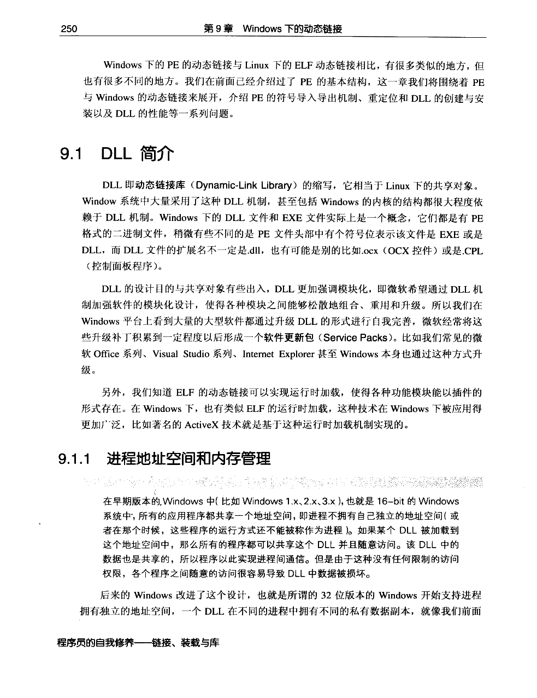
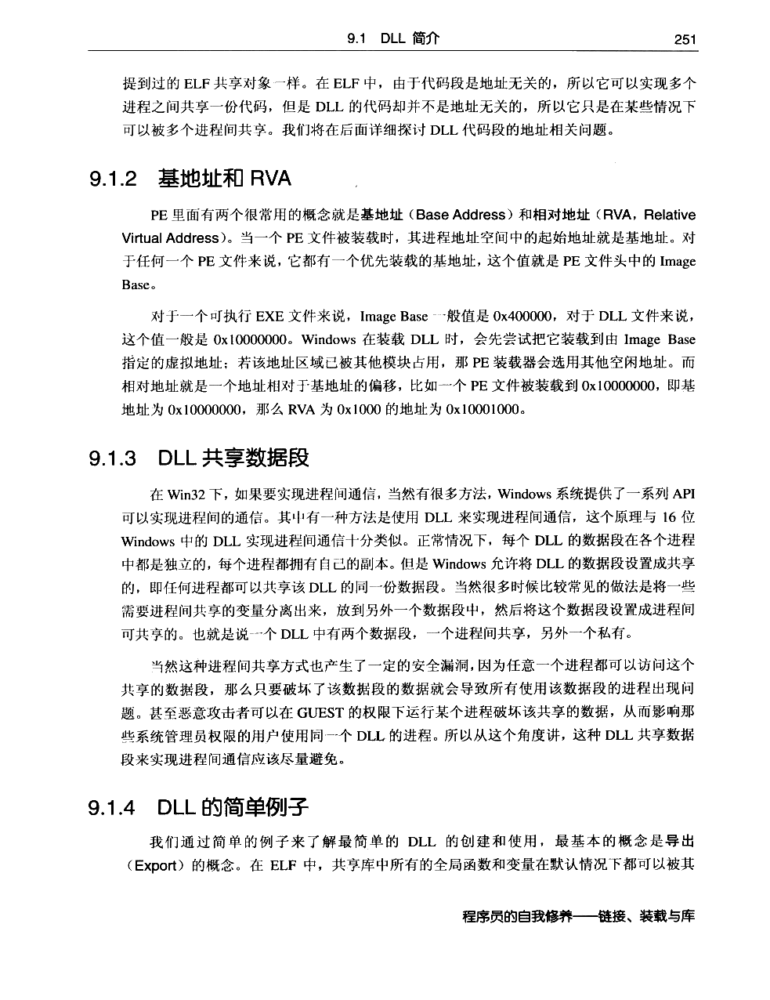
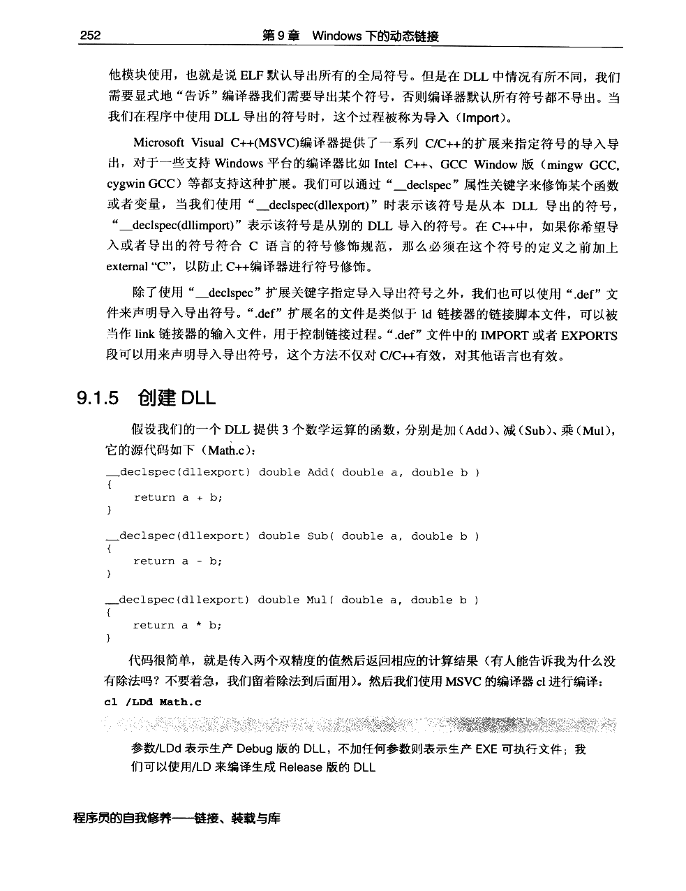
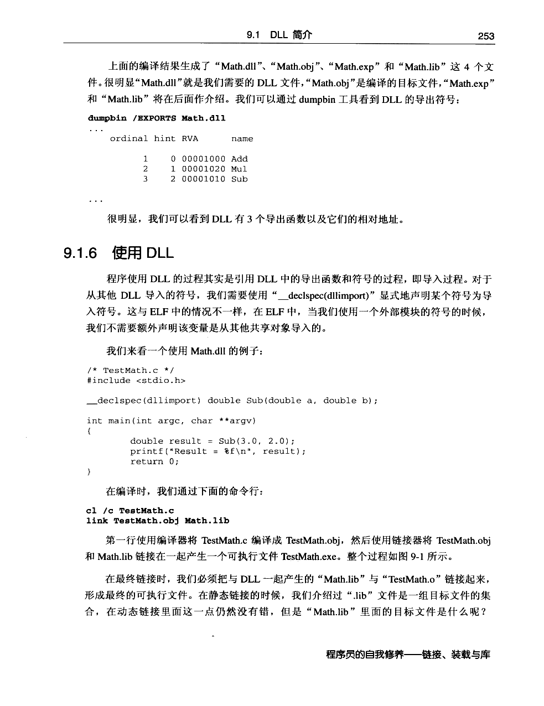
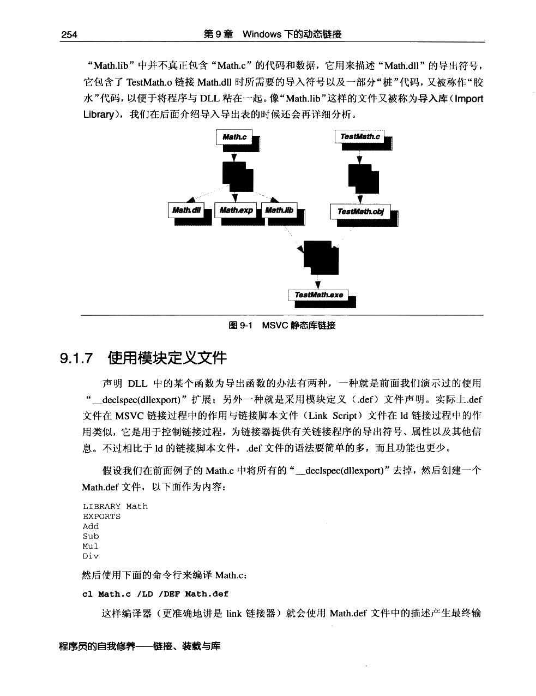
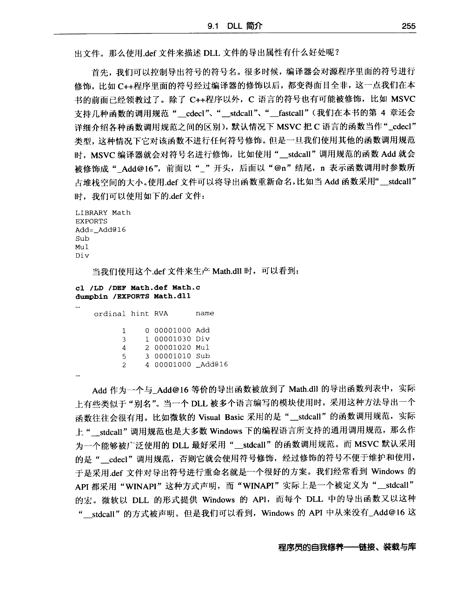
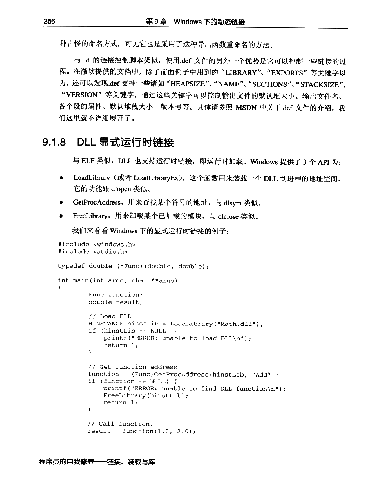
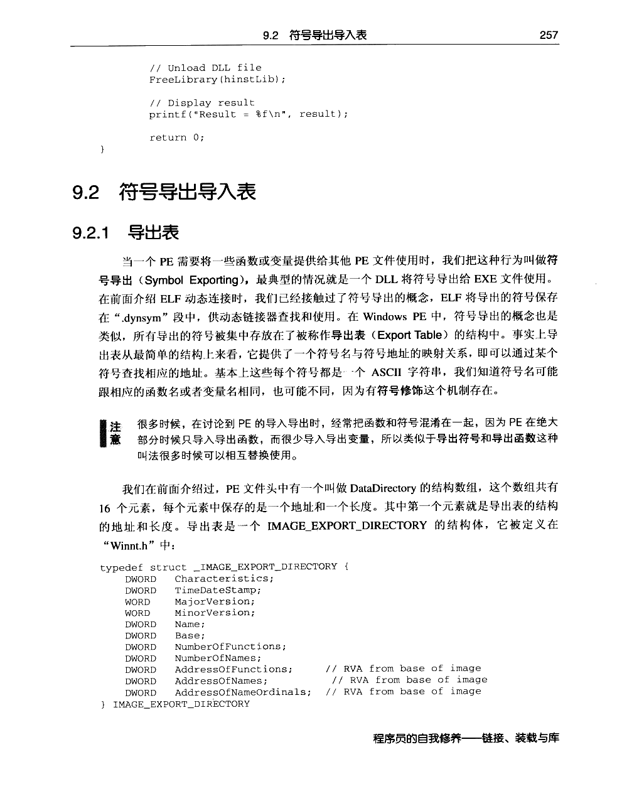

← 返回正文9.1 DLL 简介
PDF 第 273 页 · 书内第 250 页
PDF 第 274 页 · 书内第 251 页
PDF 第 275 页 · 书内第 252 页
PDF 第 276 页 · 书内第 253 页
PDF 第 277 页 · 书内第 254 页
PDF 第 278 页 · 书内第 255 页
PDF 第 279 页 · 书内第 256 页
PDF 第 280 页 · 书内第 257 页